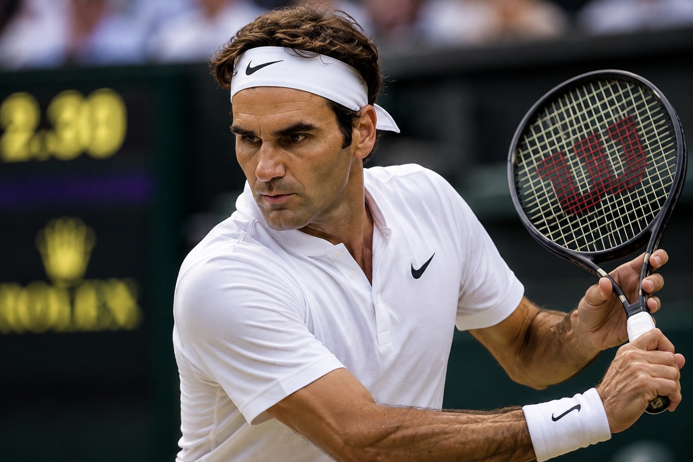
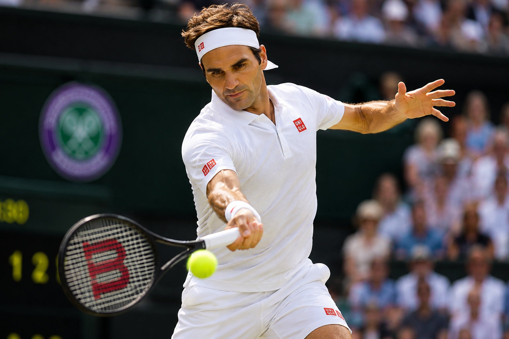
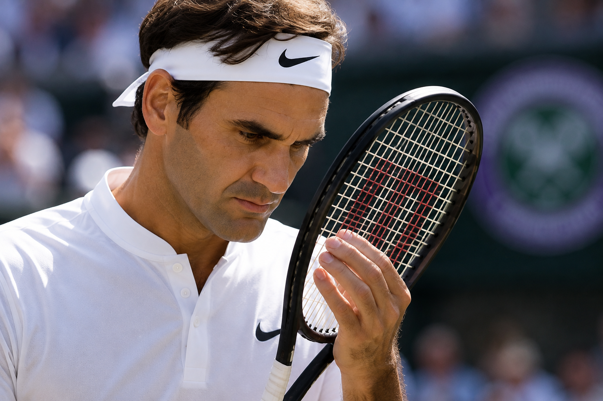
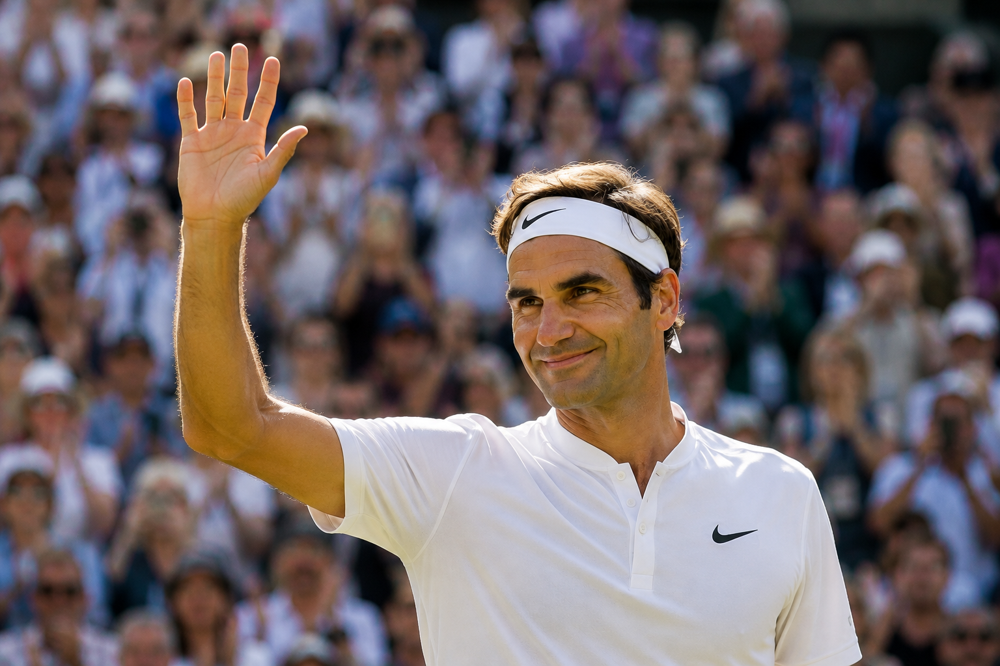

01プレーが美しい
力強さだけでなく、なめらかなフォームや 軽やかなフットワークも魅力です。 難しいショットも簡単そうに決める姿は、 まるで芸術を見ているようです。

ABOUT
ロジャー・フェデラーは、スイス出身の世界的なテニス選手です。 美しく流れるようなプレーと冷静な試合運びで多くのファンを魅了し、 長い間トップ選手として活躍しました。
THREE REASONS

01力強さだけでなく、なめらかなフォームや 軽やかなフットワークも魅力です。 難しいショットも簡単そうに決める姿は、 まるで芸術を見ているようです。

02苦しい場面でも落ち着きを失わず、 次の1ポイントに集中します。 長い競技生活の中で挑戦を続ける姿から、 努力することの大切さを学べます。

03相手選手やファンを大切にし、 勝っても負けても礼儀を忘れません。 コートの外でも誠実で親しみやすく、 多くの人から尊敬されています。
MOVIE
流れるようなサービスモーションから素早くネットへ前進し、 美しいフォアハンドボレーでポイントを決める。 この一連のプレーは、フェデラー選手の優雅さと洗練された テニススタイルを象徴しています。